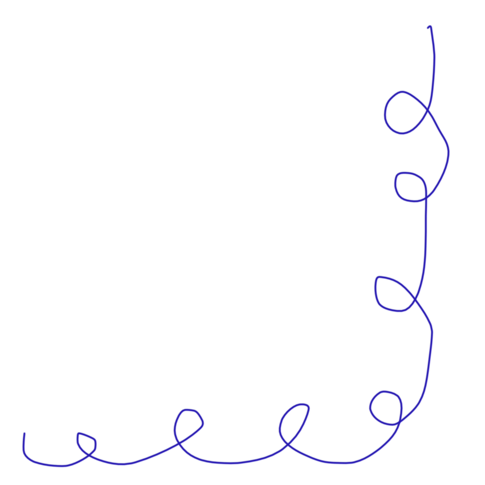
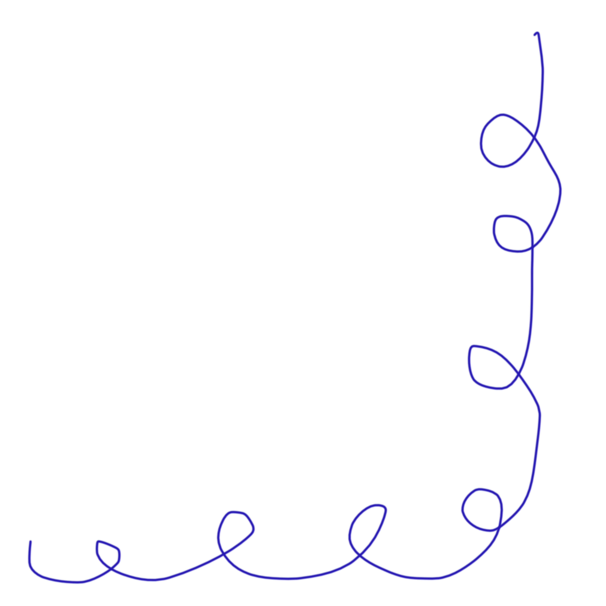
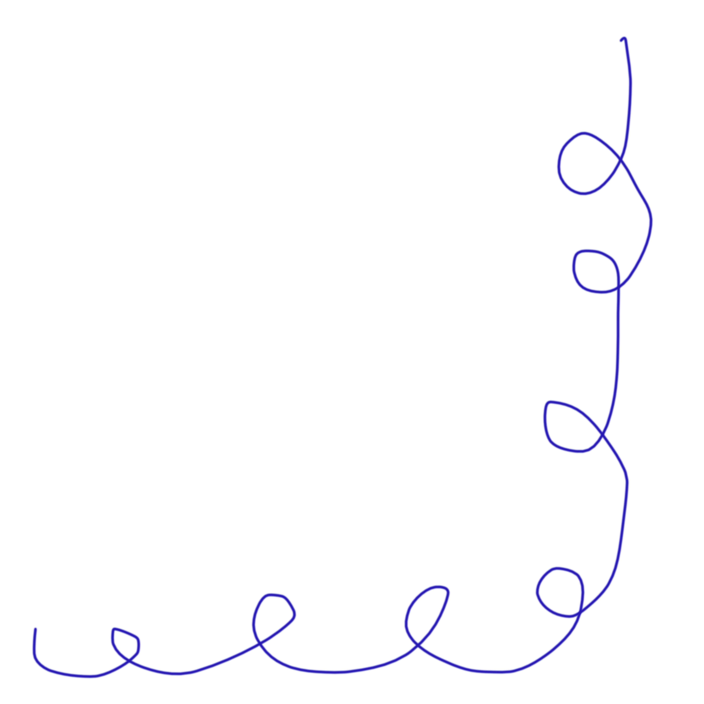

Hverdagen kan ofte føles som en endeløs rutine, hvor vi kan kæmpe med lektier, afleveringer, gøremål og stress.
At være kreativ kan være en vej til at bryde dette mønster og tilføje glæde og balance i den travle hverdag.
Kreativitet er mere end blot at skabe noget nyt. Når vi kaster os i sving med kreative aktiviteter som hækling og syning, får vi indblik i en verden af farver, former og teksturer, der udfordrer vores sind og trækker os væk fra de daglige bekymringer.
Det er en mulighed for at udtrykke os selv.
At gøre det selv er noget af det, som jeg synes er allersjovest, men der er mange andre gode ting ved det også.
For mig kan kreativitet være en social aktivitet. Jeg elsker at mødes med mine gode veninder over en kop kaffe og snakke i timevis, mens min trøje, jeg hækler på, udvikler sig og lige pludselig har både et ærme og en krave. Kreativiteten kan opbygge forbindelser og styrke venskaber. Det er dejligt at dele denne passion med andre og derfor opfordrer jeg til at dyrke dette sammen med dine venner.
At skabe noget unikt og personligt giver os mulighed for at udtrykke vores følelser, tanker og ideer - det er i sig selv ret sejt. Jeg må personligt sige, at det giver mig en fed følelse at udvikle en ide og se den komme til virkelighed. Derudover er anerkendelsen jeg ofte får fra andre en god oplevelse.
Kreativitet fungerer som en naturlig stressafleder. Når vi fordyber os i kreative projekter, bliver vores sind beroliget, og vi oplever en følelse af afslapning og ro.
Kreative aktiviteter kræver fokus og opmærksomhed på de små detaljer. Dette træner vores sind til at være mere opmærksom og hjælper med at forbedre vores koncentrationsevne i andre tilfælde også.
Alt i alt kan det at inkludere kreativitet i din hverdag fungere som en dejlig, sund og afslappende afbrydelse. Om du er nybegynder eller øvet har kreativiteten fordele for din mentale sundhed og styrker din selvudfoldelse. Så tag en kop kaffe, sæt en lydbog på og gå i kast med dit hækletøj, inden du får set dig om, er dine batterier genopladet og klar til hverdagens strabadser igen.
